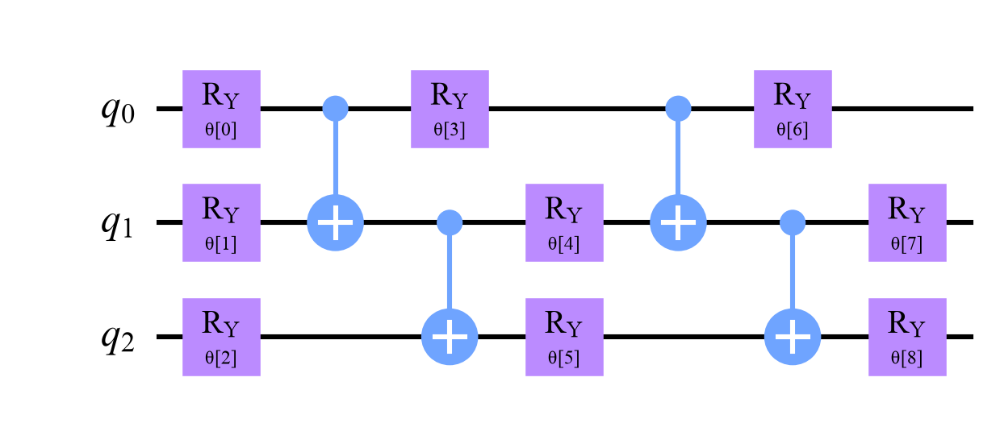
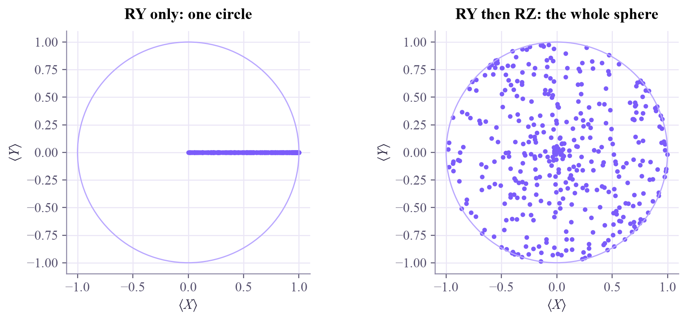

┌───────┐┌───────┐ q: ┤ Ry(θ) ├┤ Rz(φ) ├ └───────┘└───────┘ parameters: ParameterView([Parameter(θ), Parameter(φ)]) θ = π/2, φ = π/2 gives [0.5-0.5j,0.5+0.5j] (that's |+i⟩, up to a global phase)
Quantum Computing
 about 12 min
about 12 min qc-w7d1.ipynb
qc-w7d1.ipynb
Circuits with knobs: parameters
Leave the gate angles open, and one circuit becomes a whole family. Build parameterized circuits and an ansatz, and ask which states their knobs can reach.
In this lesson you will
- Build parameterized circuits with Qiskit Parameters and bind values to them
- Describe an ansatz: layers of rotations and entanglers, and count its knobs
- Explain expressibility: which states a circuit family can and can't reach
Warm-up
1 minA circuit is a function

A neural network is a function with weights you can train. This week, quantum circuits get the same treatment: their gate angles become knobs, and an optimizer turns them. This is how variational algorithms work, and how almost every quantum machine-learning model is built. It all starts with leaving the angles open.
Big idea
4 minTemplates with open angles
A parameterized circuit has symbolic angles instead of numbers. In Qiskit they're Parameter objects; assign_parameters fills them in to give an ordinary circuit. One template, as many circuits as you like.
A template designed to be trained is called an ansatz (German for "approach" or "educated guess"). A popular one, the hardware-efficient ansatz, repeats two layers:
- a rotation layer: (sometimes also ) on every qubit, each with its own knob;
- an entangling layer: CNOTs between neighboring qubits, which suit the chip's map (yesterday's routing lesson!).
With qubits and repetitions plus a final rotation layer, that's knobs.
Expressibility asks which states the knobs can reach. One knob only moves the Bloch arrow around the x–z circle; add and every one-qubit state is reachable. Two qubits with rotations but no CNOT only ever make product states, so a Bell state is out of reach, however you turn the knobs. Entangling gates open the door.
It's a balance: too few knobs and the answer may be unreachable; too many, and training gets hard, as Friday's lesson shows.
A parameterized circuit is a family of states; its expressibility is which family members exist, and training is the search for the right one.
Play
4 minTurn the knobs
First, two knobs on one qubit: reach the star. Then lock the knob and try again.
Now four knobs on two qubits. Pick a target and make it, with and without the CNOT.
Try this
Make the Bell state : one knob is enough (which one, and at what angle?). Then switch off the CNOT and press Let the computer search: it never gets past 0.5. For the product target , the CNOT isn't needed at all.
Code
2 minParameters in Qiskit
The notebook for this lessonEvery code cell below, with what it printed, is in
qc-w7d1.ipynb. To change the code and run it yourself, open the notebook in Google Colab (free, in your browser) or download it for your own Jupyter.import numpy as np
import matplotlib.pyplot as plt
from qiskit import QuantumCircuit
from qiskit.circuit import Parameter, ParameterVector
from qiskit.quantum_info import Statevector, DensityMatrix, partial_trace
theta, phi = Parameter("θ"), Parameter("φ")
knobs = QuantumCircuit(1)
knobs.ry(theta, 0)
knobs.rz(phi, 0)
print(knobs.draw("text"))
print("parameters:", knobs.parameters)
bound = knobs.assign_parameters({theta: np.pi / 2, phi: np.pi / 2}) # fill in the knobs
print("θ = π/2, φ = π/2 gives", Statevector(bound).draw("text"), " (that's |+i⟩, up to a global phase)")What it printed in the notebook
def ansatz(n, layers):
angles = ParameterVector("θ", n * (layers + 1))
qc = QuantumCircuit(n)
k = 0
for layer in range(layers + 1):
for q in range(n):
qc.ry(angles[k], q)
k += 1
if layer < layers:
for q in range(n - 1):
qc.cx(q, q + 1)
return qc
template = ansatz(3, 2)
print("knobs:", template.num_parameters)
template.draw("mpl", style="clifford")What it printed in the notebook
knobs: 9

rng = np.random.default_rng(0)
fig, axes = plt.subplots(1, 2, figsize=(8.5, 3.6), layout="constrained")
for ax, use_rz, title in [(axes[0], False, "RY only: one circle"), (axes[1], True, "RY then RZ: the whole sphere")]:
pts = []
for _ in range(400):
circuit = QuantumCircuit(1)
circuit.ry(rng.uniform(0, np.pi), 0)
if use_rz:
circuit.rz(rng.uniform(-np.pi, np.pi), 0)
rho = DensityMatrix(circuit)
pts.append([np.real(np.trace(rho.data @ m)) for m in (np.array([[0, 1], [1, 0]]), np.array([[0, -1j], [1j, 0]]))])
pts = np.array(pts)
ax.scatter(pts[:, 0], pts[:, 1], s=8, color="#7b5cfa")
ax.add_patch(plt.Circle((0, 0), 1, fill=False, color="#b9a7ff"))
ax.set_aspect("equal")
ax.set_xlim(-1.1, 1.1)
ax.set_ylim(-1.1, 1.1)
ax.set_xlabel(r"$\langle X\rangle$")
ax.set_ylabel(r"$\langle Y\rangle$")
ax.set_title(title)
plt.show()What it printed in the notebook

Your turn
2 minYour turn: knobs for a Bell state
Find knob settings that make with the four-knob ansatz, then search over all multiples of 45° without the CNOT. What's the best fidelity?
bell = Statevector([1, 0, 0, 1]) / np.sqrt(2)
def two_qubit(a, b, c, d, with_cnot=True):
qc = QuantumCircuit(2)
qc.ry(a, 0)
qc.ry(b, 1)
if with_cnot:
qc.cx(0, 1)
qc.ry(c, 0)
qc.ry(d, 1)
return qc
def fidelity(qc):
return abs(Statevector(qc).inner(bell)) ** 2
print(fidelity(two_qubit(0, 0, 0, 0))) # TODO: find a, b, c, d with fidelity 1, then search without the CNOTNeed a hint?
Week 4's Bell circuit was H then CNOT. turns into just like H does. For the search, four nested loops over np.arange(-180, 181, 45) * np.pi / 180 are fine: 9⁴ = 6,561 circuits.
Show a solution
print("a = 90°, the rest 0:", round(fidelity(two_qubit(np.pi / 2, 0, 0, 0)), 3), " (RY(90°) makes |+>, the CNOT copies it)")
steps = np.arange(-180, 181, 45) * np.pi / 180
for with_cnot in [True, False]:
best = max(fidelity(two_qubit(a, b, c, d, with_cnot)) for a in steps for b in steps for c in steps for d in steps)
print(f"best fidelity {'with' if with_cnot else 'without'} the CNOT: {best:.3f}")
print("Without a CNOT the circuit only makes product states, and no product state is more than 50% Bell.")What it printed in the notebook
a = 90°, the rest 0: 1.0 (RY(90°) makes |+>, the CNOT copies it) best fidelity with the CNOT: 1.000 best fidelity without the CNOT: 0.500 Without a CNOT the circuit only makes product states, and no product state is more than 50% Bell.
Check yourself
1 minQuick check
Question 1 of 3
A hardware-efficient ansatz on 4 qubits with 3 repetitions (and a final rotation layer) has how many knobs?
Question 2 of 3
A two-qubit circuit has only single-qubit rotations, no CNOT. What can it never make?
Question 3 of 3
Why not simply use a huge ansatz with thousands of knobs?
Wrap-up
1 minToday in one sentence
Quantum link
A quantum neural network is exactly this: data enters through some angles, trainable knobs fill the others, and a measurement gives the output. The Quantum ML tutorial's week 3 builds your first one from today's ansatz.
Go deeper (optional)
Sim, Johnson and Aspuru-Guzik, "Expressibility and entangling capability of parameterized quantum circuits for hybrid quantum-classical algorithms" (Advanced Quantum Technologies, 2019), compares many ansatz designs. The Qiskit documentation's circuit library lists ready-made ones such as real_amplitudes and efficient_su2.
Next in Quantum Computing: what the cost looks like as you turn the knobs.

That's the lesson!
Tap the button to save it. Short and steady wins.
Next in Quantum ComputingCost landscapes
Marked by mistake? Undo